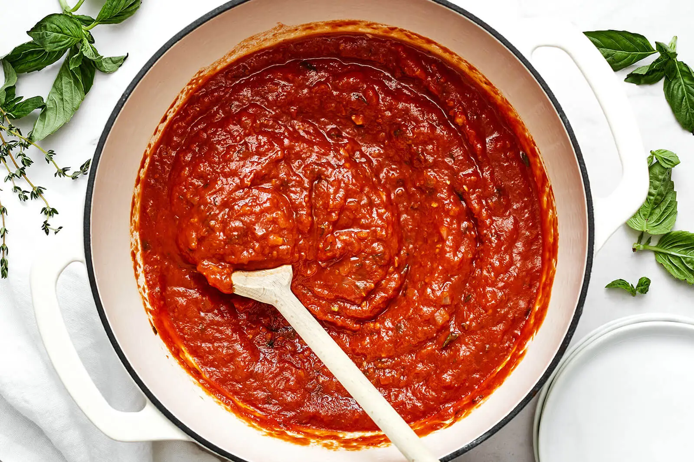
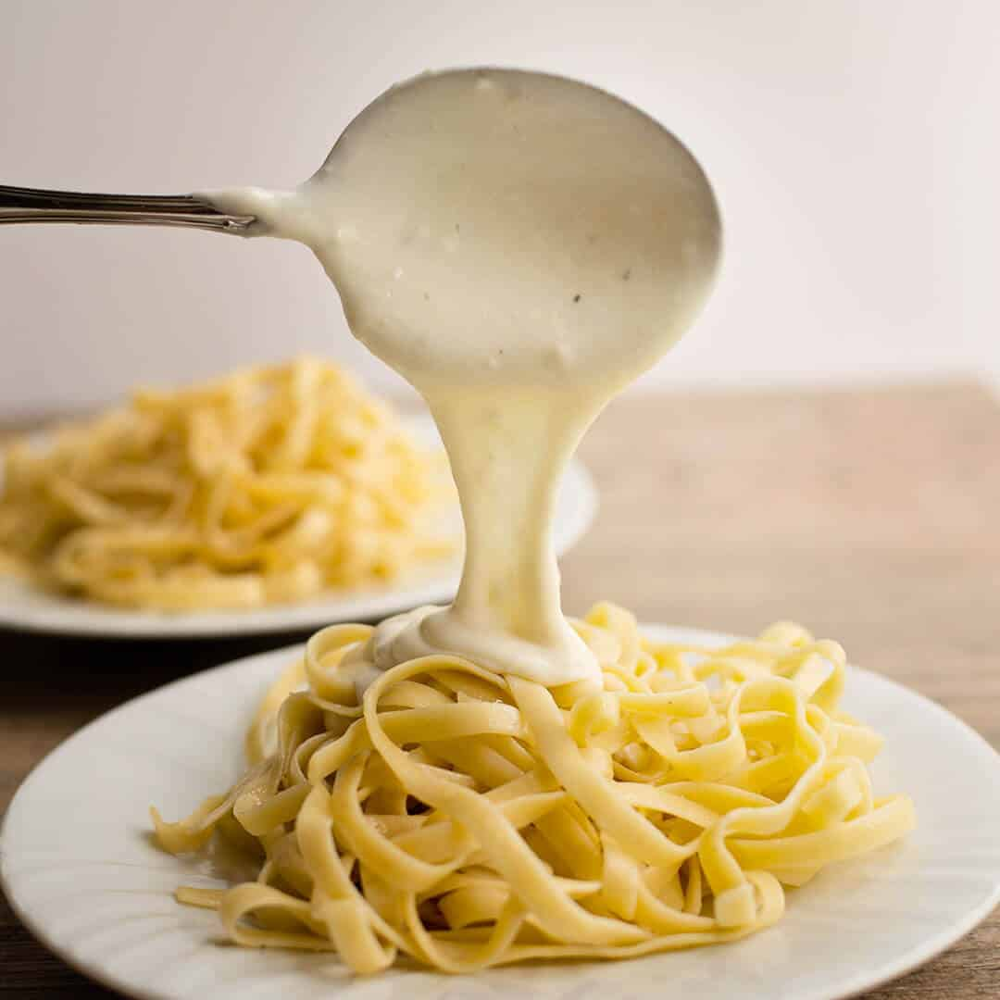

Pasta Sauces: From Simple to Sophisticated
No matter how perfect the pasta, it’s the sauce that sets the mood. From rich and meaty to light and herbal, sauces bring character and depth to every noodle. Whether you're tossing, layering, or ladling, these classic and modern sauces will take your pasta dishes to the next level.
Sauces That Bring Pasta to Life
-
Marinara
- A simple, bright sauce made with tomatoes, garlic, olive oil, and herbs. Perfect for spaghetti, penne, or dipping your bread on the side.
-
Bolognese
-
Hearty and meaty, this slow-cooked sauce from Bologna is made with ground beef or pork,
tomatoes, wine, and a splash of milk. Best served with wide pasta like tagliatelle or
pappardelle.
Make A Bolognese For Dinner Night -
Arrabbiata
- A spicy variation of marinara made with red chili flakes for a bold kick. Great with penne for a fiery weeknight dinner.
Cream-Based Sauces
-
Alfredo
- A rich and indulgent sauce made with butter, heavy cream, and Parmesan cheese. Fettuccine is the traditional pairing, but it's also delicious with gnocchi or tortellini.
-
Four Cheese Sauce (Quattro Formaggi)
-
A velvety blend of cheeses like mozzarella, Parmesan, Gorgonzola, and Fontina. Ideal for baked
pasta dishes or drizzled over shells and fusilli.
Easy Quattro Formaggi Recipe
Oil & Herb-Based Sauces
-
Pesto
- A fresh, uncooked sauce made with basil, garlic, pine nuts, Parmesan, and olive oil. It’s vibrant, aromatic, and perfect for tossing with linguine or spreading on lasagna layers.
-
Aglio e Olio
- A minimalist classic from Naples—garlic sautéed in olive oil with a touch of chili flakes. Toss it with spaghetti for a simple, elegant meal.
Butter & Other Sauces
-
Brown Butter & Sage
- A rich, nutty sauce often paired with stuffed pastas like ravioli or gnocchi. The browned butter adds depth while sage brings a warm, earthy aroma.
-
Lemon Butter Sauce
- Light and zesty, this sauce is ideal for seafood pastas or when you want something fresh and bright.
Sauce Tips
-
Use pasta water
- A splash helps emulsify and bind sauces to noodles.
-
Pair shape and sauce wisely
- Tubes love chunky, ridged pastas cling to creamy sauces.
-
Don’t overdo it
- Let the sauce complement, not drown, your pasta.
Sauces are more than toppings—they’re the bridge between simplicity and flavor. Try making your own and discover how a great sauce can elevate even the most humble pasta.